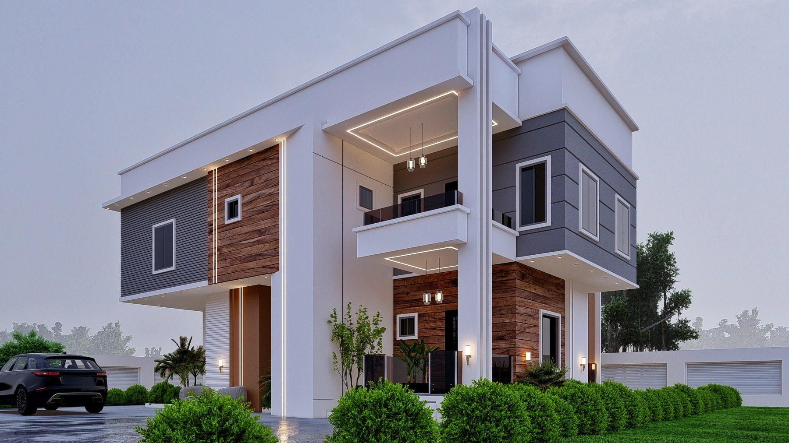
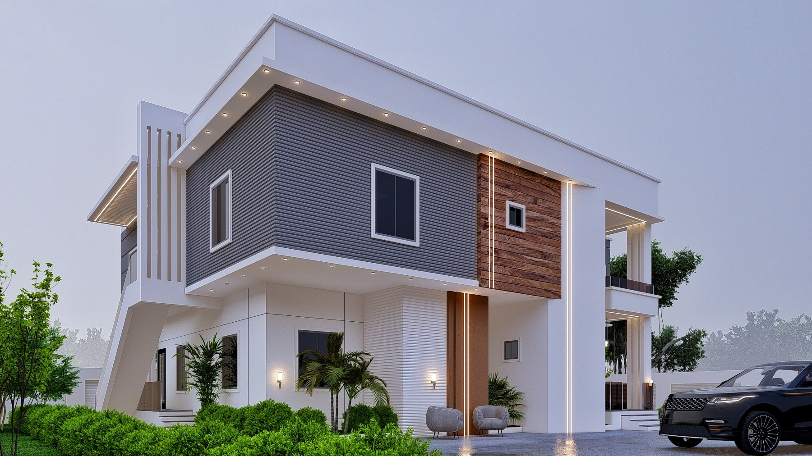
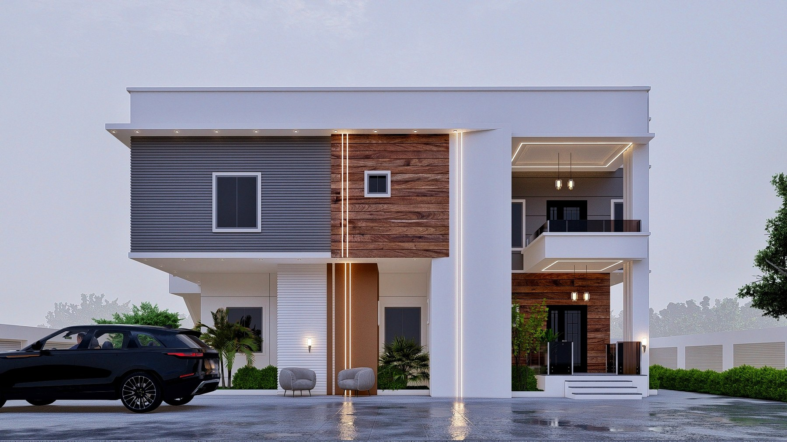
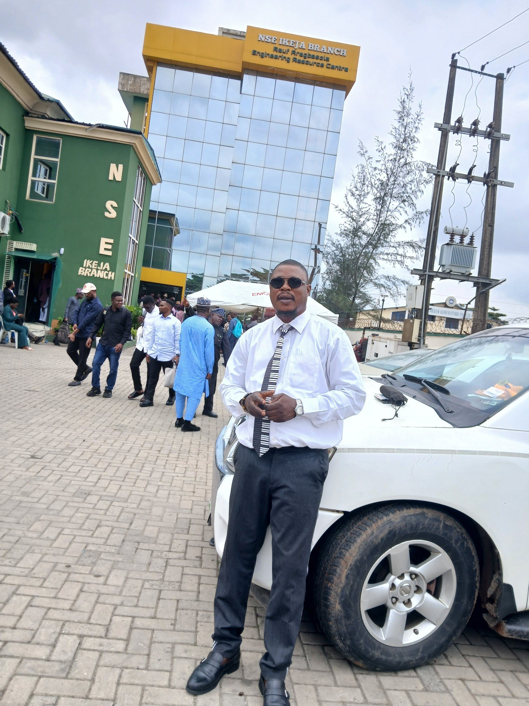
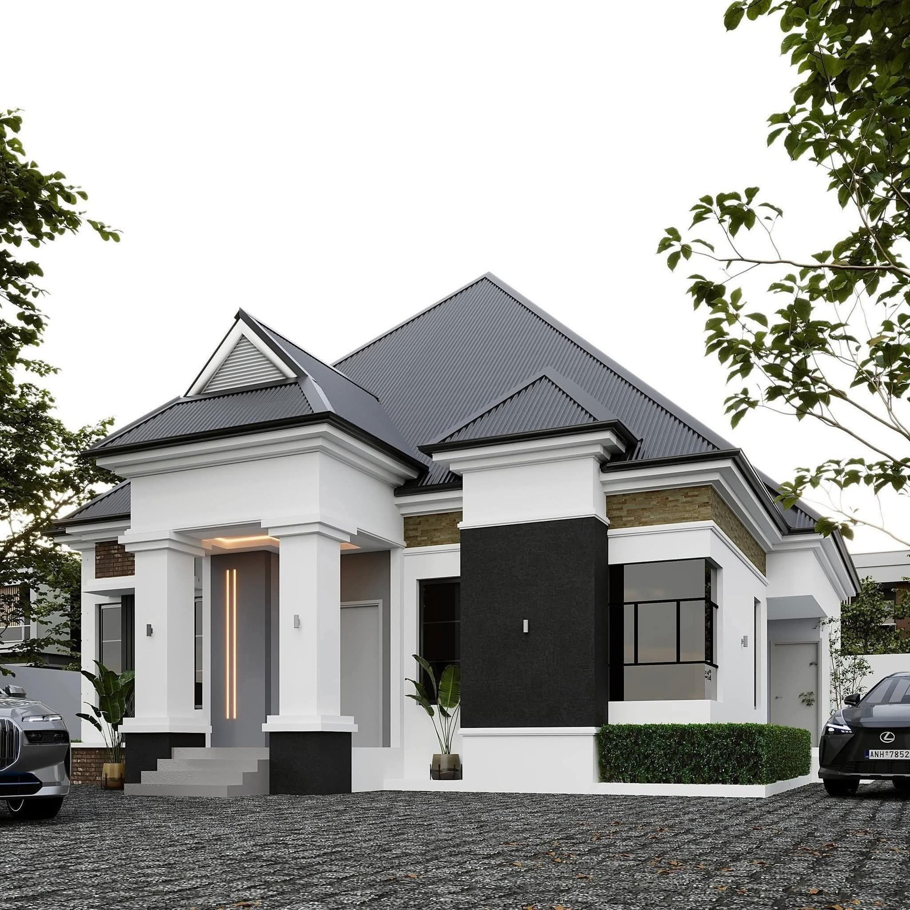
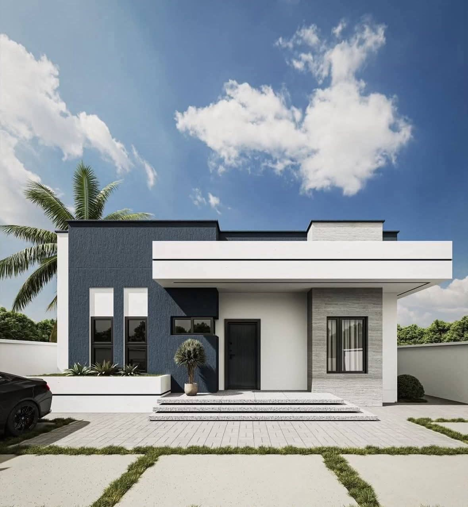
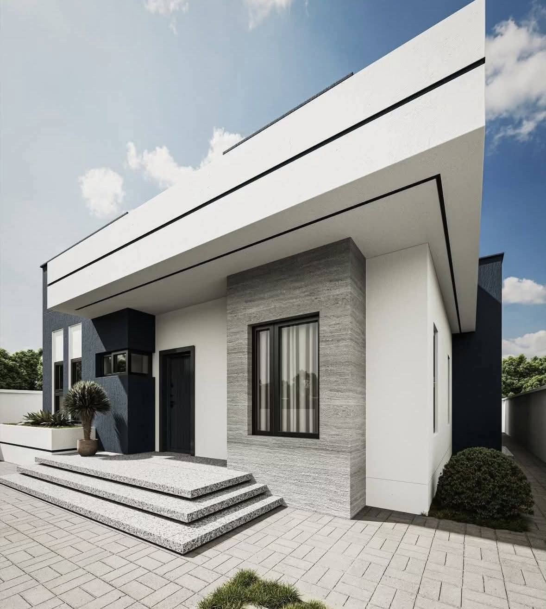

OYO STATE
Royal Garden Estate
Residential / estate development project record.
View project record →PROJECT PORTFOLIO
Explore the project records below. Open a project for its documented overview, then use the project page to discuss a similar project with TW&D.
OYO STATE
Residential / estate development project record.
View project record →OYO STATE
Residential building project record.
View project record →LAGOS STATE
Institutional building project record.
View project record →OYO STATE
Residential / development project record.
View project record →OYO STATE
Building development project record.
View project record →OYO STATE
Estate development project record.
View project record →OYO STATE
Hospitality / building project record.
View project record →OYO STATE
Residential client project record.
View project record →VISUAL GALLERY & INSPIRATION
A refreshed visual collection supplied for TW&D website presentation. The gallery is separate from the historical project records above and does not claim that any image depicts a specific project, client or location listed on this page.







These gallery visuals are for presentation and inspiration. Verified photographs for individual jobs will be displayed separately when supplied and confirmed.